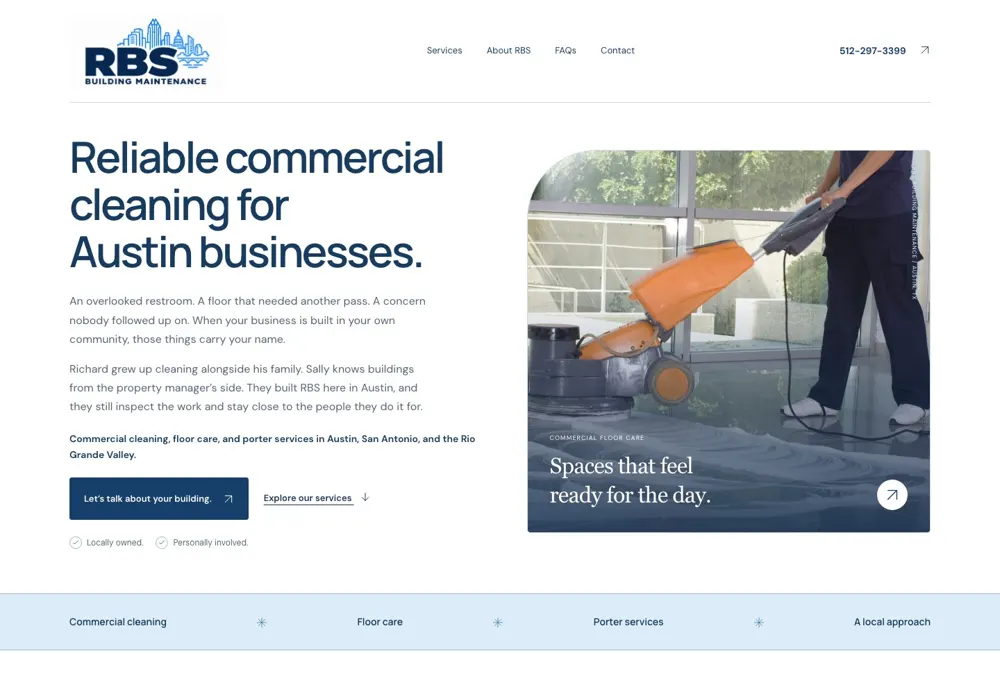
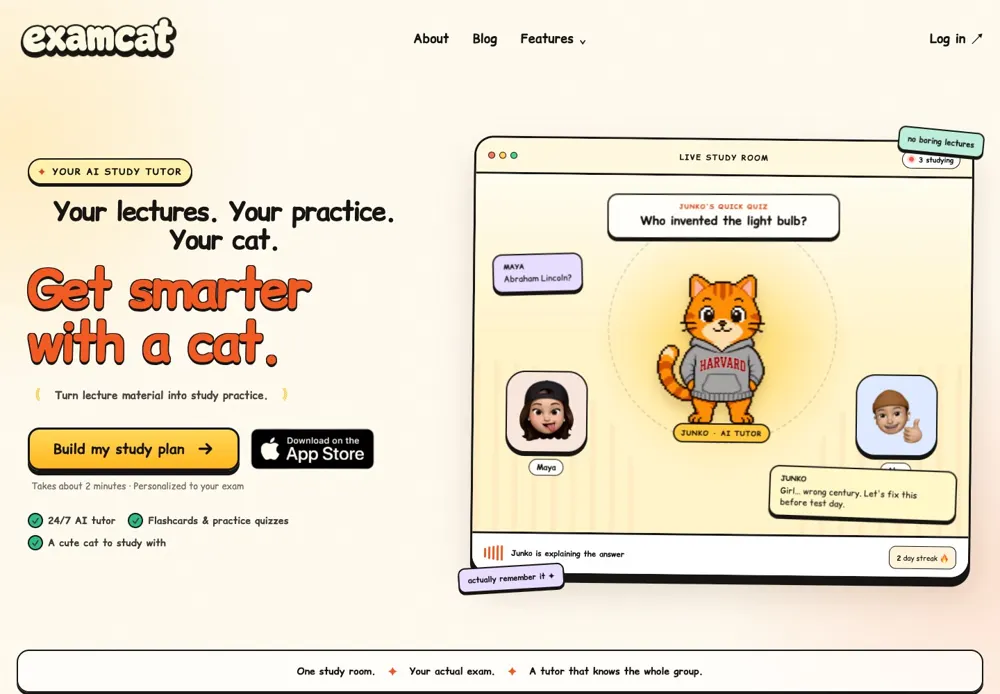
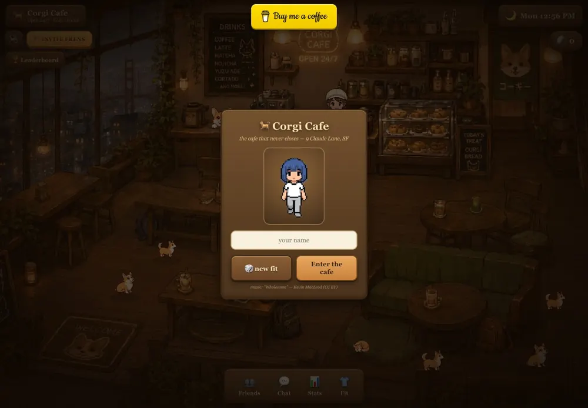
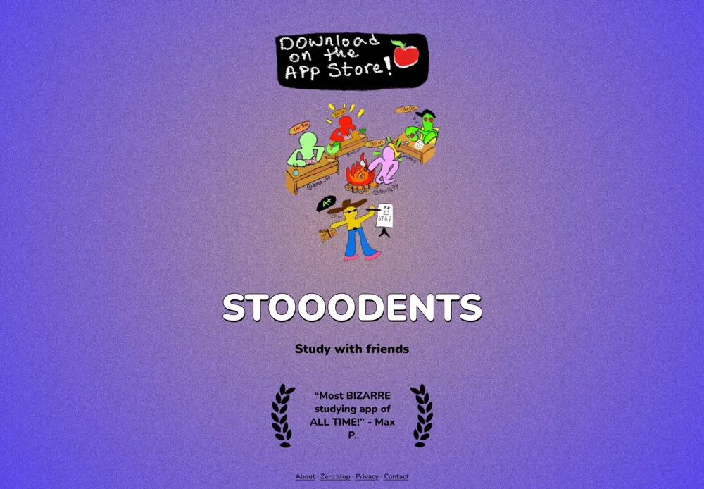
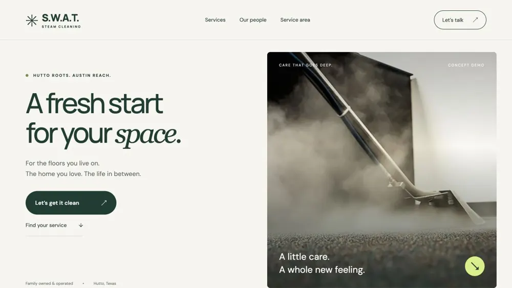
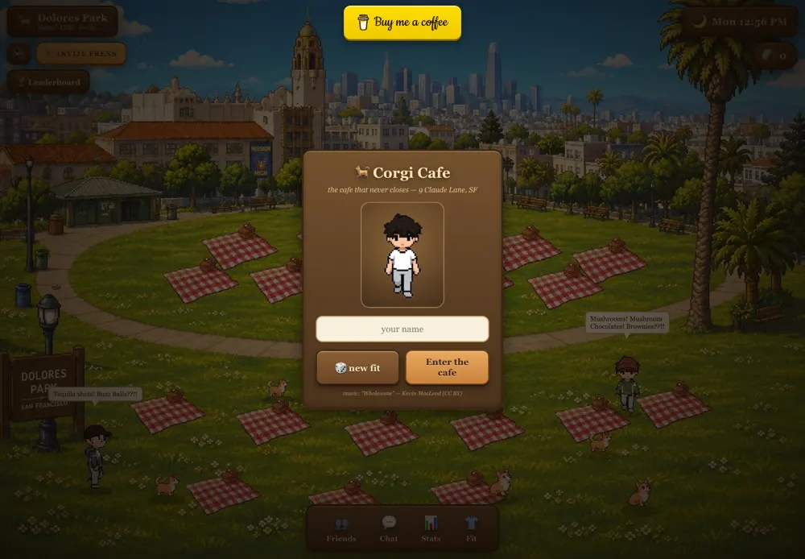

house cleaning austin
- Your Business★ 4.9 · Austin · Open nowCallWebsite
- Some competitor★ 4.3 · Round Rock
- Another one★ 4.1 · Pflugerville
Google Search & the Maps top 3
websitesseoaifor
Get found on Google, Maps and ChatGPT. Get more calls.
yo, i’m saif.

this is where the calls come from
Nobody flips through the yellow pages anymore. People search Google, check Maps, and more and more of them just ask an AI. You need to show up in all three, then have a site that turns the visit into a call.
Google Search & the Maps top 3
who’s a good house cleaner in austin that does move-out cleans?
A few well-reviewed options in Austin:
1. Your Business serves Austin, Round Rock and Cedar Park, does move-out and deep cleans, and is rated 4.9★ on Google.
2. …
Sources: yourbusiness.com/move-out-cleaning · Google reviews
ChatGPT, Google AI Overviews, Perplexity
Move-out cleaning in Austin
Same-week slots. Pet-safe products. 4.9★ on Google.
Call now Get a quote in 30 secYour site turns the visit into a call
Illustrations of the kind of results we work toward. Names are placeholders, not real listings.
one crew, all of it
Custom, mobile-first sites that explain what you do in five seconds and make calling you the obvious next step.
Show up when people nearby search for what you do, in Google Search and the Maps top 3.
Get mentioned when customers ask ChatGPT, Google AI Overviews or Perplexity who to hire in Austin.
Practical AI that saves you hours, set up and explained in plain English. No buzzwords.
Turn visitors into booked jobs, and know exactly where each lead came from.

not sure what you need? ask. we’ll tell you straight.
Ask Saif ↗real sites, live right now
Click any of them. They’re all live.

RBS Building Maintenance ↗Austin · commercial cleaning
Examcat ↗Study app · 500+ users
Corgi Cafe ↗Social web app · 5,000+ users in 7 days
Stooodents ↗Study-with-friends app
S.W.A.T. Steam Cleaning ↗Hutto · concept demo*
Dolores Park ↗Virtual study space*S.W.A.T. is an independent concept demo, not a paid client launch. No affiliation or endorsement is implied. Links open in a new tab.
no agency runaround
A quick call or text about your business, your customers and what isn’t working yet.
We agree on the pages, the SEO and AI pieces, the price and the timeline before anything starts.
You get a working preview on your phone, two rounds of changes, and a launch in about 7 days.
Ongoing SEO, AI search and lead work, with plain-English updates on what moved.
More customers now ask tools like ChatGPT and Google’s AI Overviews who to hire instead of scrolling through search results. AI SEO makes your services, service area and reviews easy for those tools to read and recommend. We’ve helped four Austin-area businesses start appearing organically in AI-generated answers.
Some fixes, like your Google Business Profile and site speed, can help quickly. Rankings usually build over weeks to months. Nobody can honestly guarantee a #1 spot, so instead we show you what changed each month.
A fully scoped website with the pages and features agreed before work begins. You get mobile-first styling, your supplied copy, photos and branding, clear service sections and contact links, and two revision rounds. One month of extra support for maintenance is included, within the delivered scope. Turnaround is about 7 days once your content, access and deposit are in.
Pages or features outside the agreed scope, copywriting, booking or payment systems, custom integrations, ongoing local SEO, AI search optimization, AI tools, and maintenance beyond the included month. Domain, hosting and other third-party fees are separate. Everything is quoted up front.
We’re based in Austin and focus on the metro: Round Rock, Cedar Park, Pflugerville, Georgetown, Hutto and nearby. We work with businesses anywhere in Texas too.
Your business details, copy, images you have permission to use, branding and any account access we need. We agree on the scope, quote, payment terms and schedule before work begins.
your move
Tell us what you do and where. We’ll tell you honestly what would bring in more calls.
text me. seriously.